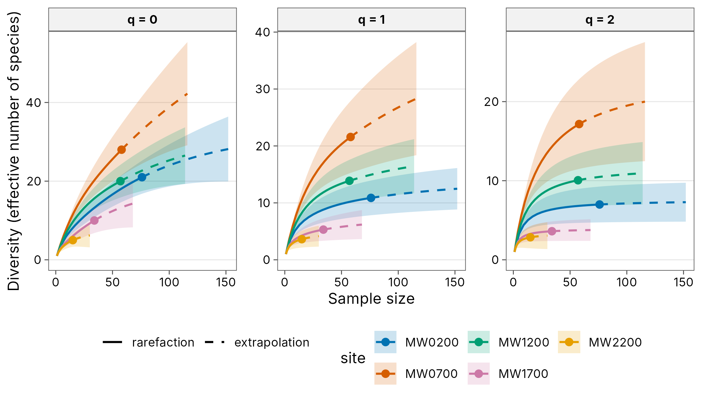
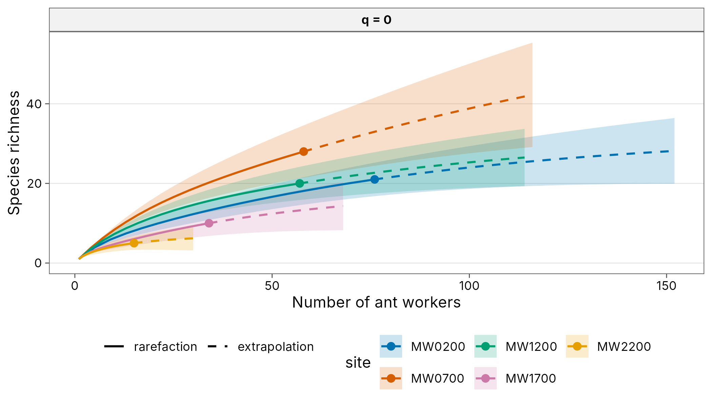
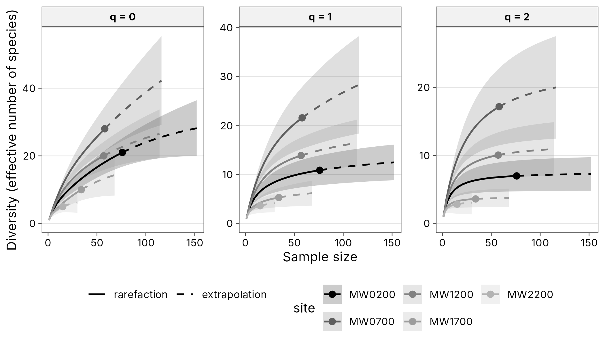
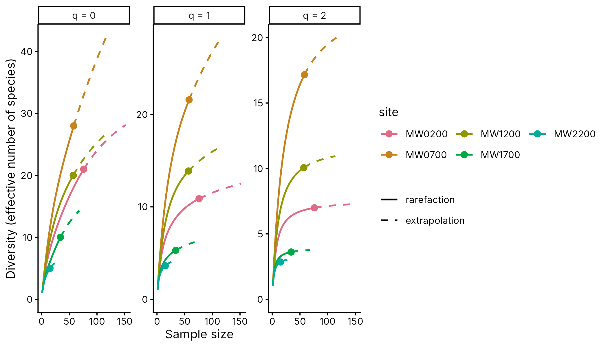
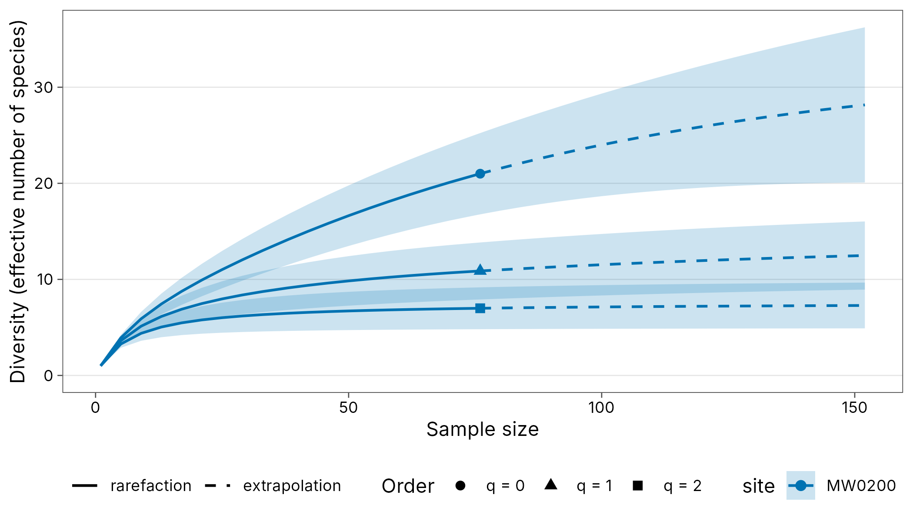
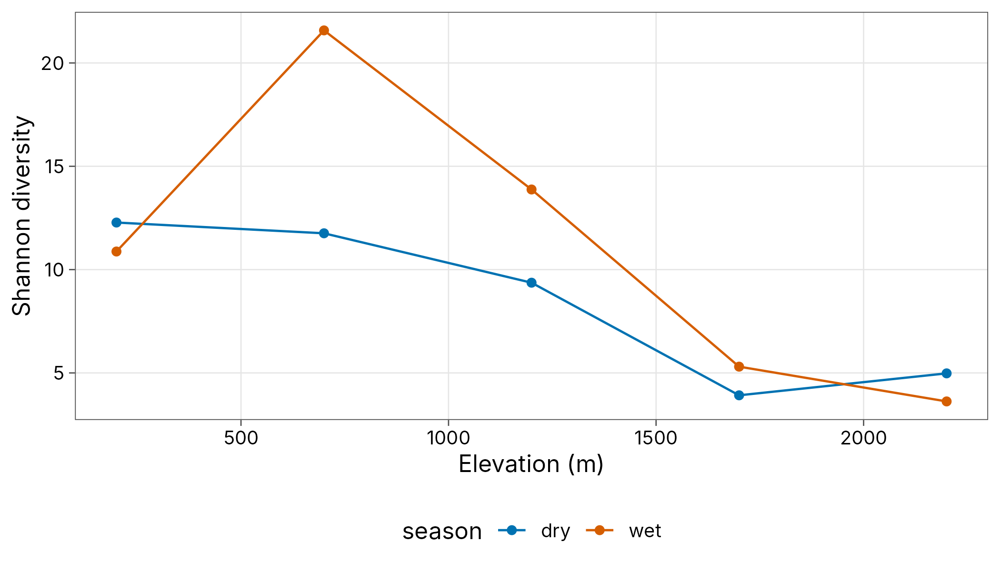

Every autoplot() method returns an ordinary ggplot, so
anything can be changed with +. The common changes for a
journal figure are built in.
library(tidydiversity)
library(dplyr)
library(ggplot2)
set.seed(1)
wet <- filter(png_ants, season == "wet")
curves <- div_rarefy(wet, nboot = 100)Plot options
Okabe-Ito colours, solid rarefaction and dashed extrapolation, 95% bootstrap ribbons and the publication theme.
autoplot(curves)
autoplot(filter(curves, q == 0),
xlab = "Number of ant workers",
ylab = "Species richness", ncol = 2, scales = "fixed"
)
palette = "grey" is for print journals; line type still
separates rarefaction and extrapolation.
autoplot(curves, palette = "grey")
Pass a vector of colours, or theme = NULL to start from
the ggplot2 default and add your own theme.
autoplot(curves,
palette = hcl.colors(8, "Dark 3"), ci = FALSE,
theme = NULL
) +
theme_classic(base_size = 10) +
theme(legend.position = "right")
autoplot(div_rarefy(filter(wet, site == "MW0200"), nboot = 100),
facet = FALSE
)
The publication theme
theme_tidydiversity() has a white background, light
horizontal grid, bold strip labels and the legend at the bottom. It
takes base_size, base_family,
legend_position and grid ("y",
"xy" or "none"). The palettes are also
available as ggplot2 scales.
div_hill(png_ants, .by = c(season, elevation)) |>
filter(q == 1) |>
ggplot(aes(elevation, diversity, colour = season)) +
geom_line() +
geom_point() +
scale_colour_tidydiversity() +
labs(x = "Elevation (m)", y = "Shannon diversity") +
theme_tidydiversity(base_size = 12, grid = "xy")
Tables
div_table() formats any result with the estimate and an
APA-style interval, for example 12.3 [9.8, 15.1], and
renders it as a tibble, knitr kable,
gt table or flextable (for Word).
est <- div_estimate(wet, nboot = 100)
div_table(est,
digits = 1, output = "kable",
caption = "Asymptotic diversity, wet season"
)| site | Order q | Observed | Estimate [95% CI] |
|---|---|---|---|
| MW0200 | 0 | 21.0 | 32.9 [23.0, 90.9] |
| MW0200 | 1 | 10.9 | 13.8 [10.9, 17.9] |
| MW0200 | 2 | 7.0 | 7.6 [7.0, 9.7] |
| MW0700 | 0 | 28.0 | 75.3 [40.2, 211.3] |
| MW0700 | 1 | 21.6 | 38.8 [22.2, 55.4] |
| MW0700 | 2 | 17.2 | 24.0 [17.2, 33.7] |
| MW1200 | 0 | 20.0 | 33.3 [22.4, 94.4] |
| MW1200 | 1 | 13.9 | 18.8 [13.9, 25.3] |
| MW1200 | 2 | 10.1 | 12.0 [10.1, 17.0] |
| MW1700 | 0 | 10.0 | 18.7 [11.4, 63.3] |
| MW1700 | 1 | 5.3 | 7.0 [5.3, 11.2] |
| MW1700 | 2 | 3.6 | 3.9 [3.6, 5.9] |
| MW2200 | 0 | 5.0 | 6.9 [5.3, 18.9] |
| MW2200 | 1 | 3.6 | 4.5 [3.6, 7.3] |
| MW2200 | 2 | 2.8 | 3.3 [2.8, 5.8] |
div_table(est, digits = 1, wide = TRUE, output = "kable")| site | observed (q = 0) | estimate (q = 0) | observed (q = 1) | estimate (q = 1) | observed (q = 2) | estimate (q = 2) |
|---|---|---|---|---|---|---|
| MW0200 | 21.0 | 32.9 [23.0, 90.9] | 10.9 | 13.8 [10.9, 17.9] | 7.0 | 7.6 [7.0, 9.7] |
| MW0700 | 28.0 | 75.3 [40.2, 211.3] | 21.6 | 38.8 [22.2, 55.4] | 17.2 | 24.0 [17.2, 33.7] |
| MW1200 | 20.0 | 33.3 [22.4, 94.4] | 13.9 | 18.8 [13.9, 25.3] | 10.1 | 12.0 [10.1, 17.0] |
| MW1700 | 10.0 | 18.7 [11.4, 63.3] | 5.3 | 7.0 [5.3, 11.2] | 3.6 | 3.9 [3.6, 5.9] |
| MW2200 | 5.0 | 6.9 [5.3, 18.9] | 3.6 | 4.5 [3.6, 7.3] | 2.8 | 3.3 [2.8, 5.8] |
div_table(est,
digits = 1, wide = TRUE, output = "gt",
caption = "Asymptotic diversity"
)| Asymptotic diversity | ||||||
| site | observed (q = 0) | estimate (q = 0) | observed (q = 1) | estimate (q = 1) | observed (q = 2) | estimate (q = 2) |
|---|---|---|---|---|---|---|
| MW0200 | 21.0 | 32.9 [23.0, 90.9] | 10.9 | 13.8 [10.9, 17.9] | 7.0 | 7.6 [7.0, 9.7] |
| MW0700 | 28.0 | 75.3 [40.2, 211.3] | 21.6 | 38.8 [22.2, 55.4] | 17.2 | 24.0 [17.2, 33.7] |
| MW1200 | 20.0 | 33.3 [22.4, 94.4] | 13.9 | 18.8 [13.9, 25.3] | 10.1 | 12.0 [10.1, 17.0] |
| MW1700 | 10.0 | 18.7 [11.4, 63.3] | 5.3 | 7.0 [5.3, 11.2] | 3.6 | 3.9 [3.6, 5.9] |
| MW2200 | 5.0 | 6.9 [5.3, 18.9] | 3.6 | 4.5 [3.6, 7.3] | 2.8 | 3.3 [2.8, 5.8] |
ft <- div_table(est,
digits = 1, ci_style = "parentheses",
output = "flextable"
)
ftsite |
Order q |
Observed |
Estimate (95% CI) |
|---|---|---|---|
MW0200 |
0 |
21.0 |
32.9 (23.0-90.9) |
MW0200 |
1 |
10.9 |
13.8 (10.9-17.9) |
MW0200 |
2 |
7.0 |
7.6 (7.0-9.7) |
MW0700 |
0 |
28.0 |
75.3 (40.2-211.3) |
MW0700 |
1 |
21.6 |
38.8 (22.2-55.4) |
MW0700 |
2 |
17.2 |
24.0 (17.2-33.7) |
MW1200 |
0 |
20.0 |
33.3 (22.4-94.4) |
MW1200 |
1 |
13.9 |
18.8 (13.9-25.3) |
MW1200 |
2 |
10.1 |
12.0 (10.1-17.0) |
MW1700 |
0 |
10.0 |
18.7 (11.4-63.3) |
MW1700 |
1 |
5.3 |
7.0 (5.3-11.2) |
MW1700 |
2 |
3.6 |
3.9 (3.6-5.9) |
MW2200 |
0 |
5.0 |
6.9 (5.3-18.9) |
MW2200 |
1 |
3.6 |
4.5 (3.6-7.3) |
MW2200 |
2 |
2.8 |
3.3 (2.8-5.8) |
Save it to Word with
flextable::save_as_docx(ft, path = "table1.docx").
Saving figures
Journals usually ask for a set width (single column about 85 mm, double column about 175 mm) and 300 dpi or more for raster images, or a vector format such as PDF or EPS.
p <- autoplot(curves, theme = theme_tidydiversity(base_size = 8))
# Single column, 300 dpi TIFF with LZW compression
ggsave("figure1.tiff", p,
width = 85, height = 70, units = "mm",
dpi = 300, compression = "lzw"
)
# Double column, vector PDF (embed fonts with cairo)
ggsave("figure1.pdf", p,
width = 175, height = 90, units = "mm",
device = cairo_pdf
)
# High-resolution PNG for slides or preprints
ggsave("figure1.png", p,
width = 175, height = 90, units = "mm",
dpi = 600, bg = "white"
)Set base_size to the font size the journal asks for
(often 8 to 10 pt) because ggsave does not rescale text when the figure
is made smaller.